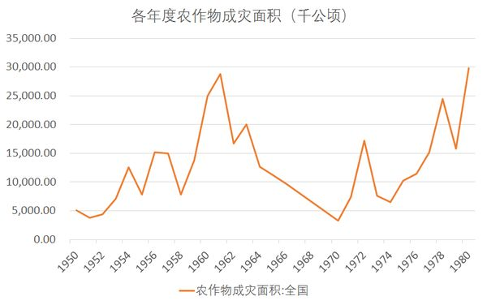

大跃进期间的自然灾害相对来说确实很严重，但并不是造成非正常死亡的主要原因。从下图可以看到，从1950年到1980年，农作物成灾（成灾意味农作物损失在30%以上）面积有两次接近3000万公顷，一次发生在大跃进期间，另一次在1980年。在1960和1961年，农作物成灾的面积达到2000万公顷以上。

但是两次自然灾害比较，1980年的粮食产量只比1979年低3.5%，仍然是建国以来的第二高水平，但1960和1961的粮食产量，别说和大跃进前相比了，比1952年都要低。就看从1954年到1969年这16年里成灾面积最低的1958年，短短半年间也出现了这样自相矛盾的两个文件：
1958年6月29日，《中共中央批转河南省委关于夏收夏种工作的简报》
今年小麦及夏季作物已获得空前丰收。全国比去年增产百分之六十左右。河南省今年夏收增产最突出，比去年增产一百一十四亿斤，增长百分之一百一十七，占全国夏收增产总数四分之一以上。
1959年1月10日，《中共中央转发河南省委关于浮肿病治疗情况报告的批示》
各省、市、自治区党委：
现将河南省委关于浮肿病治疗情况的电话汇报转发给各地。去年秋季以来，劳动强度加大，加上生活管理不善，引起了浮肿病的发生。同时入冬以来，气候有些反常，很久不雨， 过于干燥，也是发生各种病症的一个原因，如果在生活集体化的工作中不严加注意，就有出现大流行病的可能。请各地党委切实注意，并对全省地区进行一次检查，如发现流行性病症，即应组织力量迅速抢治。
为什么河南回在丰收的半年后出现饥荒呢？其实也很好理解，主要有两条：
第一，大跃进对农业劳动力资源的抽调。这里的讨论逃不开钢。
1958年6月22日，毛泽东批示《一九五八年国民经济形势和一九五九年经济发展展望的提要》：
此件印发军委会议各同志。超过英国，不是十五年，也不是七年，只需要两年到三年，两年是可能的。这里主要是钢。只要一九五九年达到二千五百万吨，我们就在钢的产量上超过英国了。
1958年8月，在《中共中央关于一九五九年计划和第二个五年计划问题的决定》上，正式公布了产量规划：1959年钢产量3000万吨；1960年争取5000万吨，第二个五年计划结束时，即1962年，争取达到8000万吨到1亿吨——差不多相当于同期英国钢产量的四倍。而仅在两年前，钢产量的口号还是“十五年赶英”。
钢的大跃进在1958年北戴河会议后达到高潮，毛泽东在会议上说：
今年要搞一千一百万吨钢，去年是五百三十五万吨，要翻一番。这个东西有完不成的危险。今天是八月十七日，只有四个月零十三天了。中心的问题是要搞到铁。还要抓紧一点，今年要把一千一百万吨钢搞到手……要下紧急命令，把铁交出来，不许分散。大、中钢厂的计划必须完成，争取超过。
……三令五申，凡有铁不拿出来者，要执行纪律。我看一千一百万吨钢有完不成的危险。六月间，我问王鹤寿：钢是否可能翻一番？问题是我提出的，实现不了，我要作检讨。
随之而来的是大量农业人口被抽调进入工业部门，比如1958年9月24日的《关键在于大搞群众运动》、10月4日的《开展炼钢的群众运动》、10月17日的《让土法炼钢遍地开花》等，都热情地动员群众炼钢，1958年10月，河南省委第一书记吴芝圃在《论钢铁生产大跃进》中透露，“全国奔赴钢铁战线的劳动大军已经有三千多万人，单就河南说，也已经有四百多万人上山。”——吴芝圃的讲话也揭示了河南在夏粮丰收的情况下出现饥荒的原因，秋收农忙时节，全省三分之一的农村劳动力上山炼钢去了，1958年天气再好又能如何？
1958年10月17日，毛泽东对当前的炼钢群众运动相当满意，说：
钢，吹出去了，没有管，北戴河会议才管起来，一个半月就情况大变，听说京汉路两侧烽火弥漫。
京汉路两侧烽火弥漫，说的就是为了炼钢而大量开设的人力密集型群众小型土法炼钢厂——“小土群”。当然，大跃进不仅仅包括钢铁，所有的工业部门，基础建设部门，都出现了不同程度的大跃进，需要根据北戴河会议定下的指标将生产提升，而这就需要劳动力的抽调。
这种劳动力抽调有多严重呢？1963年10月8日，国家统计局在《第二个五年计划期间我国劳动工资的几个比例关系》中做了一个总结：
第二个五年计划期间，我国农业劳动力曾经一度削弱、减少。1957年全国农业劳动者有19310万人，1960年减为17019万人，减少近2300万人。农业劳动者的减少，主要是由于城市从农村招工过多。
第二个五年计划期间的前3年，全国新增职工2500多万人，其中来自农村的就有1900多万人，占76%。他们还带了大批家属进城，其中有很多人是农村的劳动力。从农村招收的职工又大多是农业战线的青壮年。这样，不仅农业战线的劳动力数量大大减少，也影响了农业劳动力的质量下降。虽然，第二个五年计划期间，农村使用的动力增加了500多万马力，可顶2000万劳动力，但同期农村役畜减少1480万头，等于减少劳动力5920万个。这就更加加深了农村劳动力不足的严重程度，大大降低了农业生产力。
第一个五年计划期间，我国职工人数也增加很多，由1952年的1580万人增加到1957年的2451万人，增加870多万人，增长554%。但第一个五年计划期间增加的职工主要是从城镇招收的（其中很大一部分是解放前遗留下来的失业人员），从农村招收的劳动力仅349万人，只占农村新成长的劳动力的8%，而第二个五年计划期间的前3年从农村招收的职工则占农村新成长的劳动力的72%，因此，第一个五年计划期间农业劳动力并未减少，相反的还增加了1991万人，这是保证农业增产的根本条件。
简单说，就是农业劳动人口减少了，而本身农村的机械化并没有上去，谈不上用机械来代替劳动力，那劳动力减少当然会造成粮食产量的下降。
事实上，农业劳动力减少可能会影响农业产量的问题并不是没有被注意到，但在当时，人们给出的回答是这样的：
有些农村的领导干部……认为，要大搞钢铁的群众运动，就势必挤掉农业；特别是当前正值秋收、秋耕、种麦的紧张季节，抓了钢铁，就会丢掉粮食，误了秋耕、种麦……他们对于党中央关于党的领导工作的重点，必须迅速地转向工业方面，实行书记挂帅，大抓钢铁的指示，有无穷的忧虑……他们唯一的借口，是劳动力紧张。他们习惯于静止地机械地计算劳动力。粮食和钢铁决然不能同时丰收——这是他们的结论。然而，钢铁生产大跃进的具体实践，恰恰同它们的想法相反，粮食和钢铁双丰收是完全能办到的。（《红旗》杂志1958年10月的文章《党的群众路线在钢铁战线上的伟大胜利》）
这样的讨论不仅在报章上出现，在1959年2月6日的《全国农村工作部长会议的报告》中，时任分管农业的中央书记处书记谭震林做了一个简单测算：
实际目前在农村的劳动力，约有二亿一千万个。今年比去年大约已经减少了劳动力六百万个，国家的工业、交通建设，还需要在农村调用一部分劳动力……这些都表明今年劳动力的紧张程度比去年会大得多。
……全国平均今年每一个劳动力需要生产粮食大约一万五千斤，再按每个劳动力年做三百个劳动日计算，则每个劳动日需要生产粮食大约五十斤，去年每个劳动日平均生产约二十八斤，这就是说今年的劳动生产率大约要提高一倍左右。否则，今年农业的主要指标，就有难以完成的危险。
也就是说，要保证完成粮食生产任务，劳动生产率需要提高一倍。一年里面劳动生产率能提高一倍吗？现在我们当然知道这不可能，但在当时这篇报告里，谭震林最后说道：
会议认为只要认真地实行了上述五项办法，同时又能够全面地贯彻执行农业八字宪法，善于综合运用这些农业增产措施，那么争取提高劳动生产率一倍是完全可能的。
结果当然是没能将劳动生产率提高一倍了，粮食产量随着农业劳动力的减少应声而落，1960年比1957年下降了近30%。
第二，大跃进增加了粮食消耗。
谈到大跃进，一些研究会强调其中的“放卫星”，高估产量的行为，然后将高征购和高估产联系在一起，将其作为大跃进造成饥荒的主要原因。但这种解释有其局限。从动机上看，上面有高估产和高征购，下面的对策就是瞒产私分，两者抵消，无法做到产量高估200%征购量就上去200%。
换句话说，不是因为估产高了，卫星放上去了，然后就需要按照一个定死的比例来统销统购，图个面子上的好看。大跃进期间相对高的征购比例主要是因为——真的需要那么多粮食。
这个粮食的需求增加主要有两块，第一就是农村劳动力从粮食生产者变成粮食消费者，需要增加商品粮供给。比如1957年，全国粮食净收购量3387万吨，城镇消费1960万吨；1959年的净收购量上升到4756万吨，城镇消费2614万吨，从这两个数字看，征购量和消费量分别上升了40%和33%，看起来上升很多，属于高征购是吗？但我们再看同期上升了19%的城镇总人口数和上升了104%的职工人数，这个净征购和消费量的上升幅度，就显得没有那么大了。如果只看从1957到1960年城镇人口的平均粮食消费量，基本没有改变，同样说明城镇粮食消费是随着城镇人口增加等比例扩张的。
这说明，在大跃进期间的征购，并不是按照放卫星的比例来无上限地提高征购量，而是在保证城镇居民人均粮食消费水平不下降的情况下进行征购。比如1959年9月4日，粮食部党组向中央递送了关于粮食、油脂调拨情况的报告，声称三季度的粮食、油脂调运计划难以完成，中央回复：
目前城市和出口的粮食、油脂供应情况还不够好，请没有完成调出计划的地区继续鼓足干劲，抓紧当前铁路可以多运粮食、油脂的有利时机，迅速完成三季度的粮食、油脂调出任务。
城市消费满足不了了，赶紧再催几把，抓紧从农村收购一些。消费的压力，是提高征购的主要动力，估产的高低，对征购量的影响并不大。
除了城镇居民的总需求上升，粮食的出口需求也在上升。从1958到1960年，中国净出口粮食近1000万吨，占这三年粮食产量的2%左右。但在1957年以及之前，粮食净出口量常年占总产量的1%以下，1961年之后则变成了净进口。为什么1958年到1960年会大量出口粮食呢？
还是要归结到（工业，尤其是钢铁的）大跃进上。比如我们看1959年9月2日商业部党组的报告《关于目前生猪收购、出口、调拨情况的报告》
三季度冻猪肉出口计划原定为三点五万吨，到八月二十七日只完成了一点六万吨，占季度计划的百分之四十六。八、九 两月已经租妥外轮(冷藏船)一点五万吨，如果不抓紧冻猪肉的生产，外轮进港后无货可装，在经济上、政治上都是不利的。
那为什么要出口冻猪肉之类的食品呢？李富春1959年10月20日的一个讲话很有代表性：
明年有很多缺口，钢材、有色金属、石油、橡胶、化学原料，甚至拖拉机等都要进口，若干关系着国家命运的骨干项目的成套设备还必须进口。怎么办?内销外销要兼顾，要设法在工农业生产发展的基础上，尽可能想办法多出口。按照一千八百万吨钢计划的安排，明年最少进口八十二亿，比今年进口七十五亿增加七亿，因此就多出口。农业方面要多挤一些东西，出口一些大米、大豆、油料、猪肉，换一些橡胶。工业方面，多生产矿产，多出口一些。根据经委统计各部报的第一季度钢铁、有色金属、铅、铜、铝的生产指标都比今年第四季度高，但是锡、钼、铅都不到今年第四季度的百分之八十甚至百分之七十，这是值得注意的，这关系着明年的速度和是否能继续大跃进的问题。明年总有六十万至七十万吨的钢材对不上需要的口径，必须用进口钢材调剂，这样也要请外贸部进口钢材的时候和需要的品种对准口径。
挤出农业产品来出口，换来工业生产资料，而根本目的就是为了工业的大跃进。事实上，在大跃进期间，中国进口量中生产资料占95%左右，而这个数字在1962年下降到60%。
粮食产量下降，但粮食需求上升，那么在保证城市居民口粮不下降，粮食出口还需要上升的情况下，农村居民的自留口粮自然就下降了——农村居民的粮食人均消费量在1960到1961年下降到每人每年150公斤左右，仅为大跃进之前的75%。值得一提的是，中央在1960年9月7日发布了《中共中央关于压低农村和城市的口粮标准的指示》，规定如下：
农村的口粮标准必须降低。淮河以南直到珠江流域的地区，应当维持平均每人全年原粮三百六十斤，遭灾的地方应当更低些。丰收的地方，在完成原定外调的和为支援灾区而增加外调的粮食任务以后，还有余粮，口粮标准可以提高到原粮三百八十斤，最多不能超过原粮四百斤。在吃的时候，还要厉行节约，应当采取湖南的经验，一年的粮食分做十三个月吃，以免在明年青黄不接时发生粮食紧张，使大家有备无患。凡是超过四百斤标准的要降下来。这自然要进行艰苦的说服工作，并且必须做好商品粮较多地区的商品供应工作，以便把余粮更多地卖给国家。淮河以北地区的口粮标准，应当压低到平均每人全年原粮三百斤左右，东北等一部分严寒地区可以稍高一点；而各省的重灾区，则应当压低到平均每人三百斤以下。
……在压低农村口粮标准的同时，城市供应标准也必须相应地降低。除了高温、高空、井下和担负重体力劳动的职工以外，其余的全部城市人口，每人每月必须压低口粮标准两斤左右。商品粮城市的粮食供应必须认真加以整顿，坚决消灭浮支冒领，取缔“黑人口”。城市近郊区和一般农村的口粮标准，差别不能大，远郊区应当向一般农村看齐。
如果不是城市也开始相应降低口粮，农村的余粮还会更低。
从上面的分析我们看到，无论是粮食的减产，还是粮食消费的增加，都逃不过农村劳动力的抽调这个症结。那么，中央发文要求将农村劳动力从工业抽调回农业，不就解决问题了吗？
没有那么简单，比如1960年9月26日的《中共中央批转国家计委党组、劳动部党组关于当前劳动力安排和职工工资问题的报告》就提到：
反对在劳动力使用上的浪费现象，从各个方面把一切可以节省的劳动力节省下来，用之于直接的生产劳动，保证工农业生产，首先保证粮食生产……我国目前的情况是，农业机械化水平还很低，农业生产还几乎完全靠人力和畜力，因而农业劳动生产率还是很低的，特别是两年来，从事农业生产（主要是粮食生产）的劳动力数量减少了，质量也降低了。
这个文件确实看到了农业缺劳动力的问题，但该文件同时又说：
当前钢铁煤运和今后工业、交通、基本建设以及商业等新增的企业所需要的劳动力， 应当从技术革命、原有企业、事业精简的人员和城市新成长的劳动力中调剂解决。
这里我们看到了一个很熟悉的词，“技术革命”，这个词在1960年非常流行，比如在1960年年初时发布的《中共中央转发太原市委关于开展以机械化和半机械化为中心的技术革新和技术革命运动的决议的批示》就说：
……认为单靠增加工人来增加生产的右倾保守思想必须坚决克服，决定立即掀起一个以大搞机械化和半机械化为中心的群众性的技术革新和技术革命运动，通过这一运动提高劳动生产率百分之五十，力争原有生产单位增产不增人，并节省出四万至五万个劳动力，支援新建单位。
一个运动之后劳动生产率提高50%，达到减人还增产的目的，这和前面农业劳动力报告中“那么争取提高劳动生产率一倍是完全可能的。”是如此类似。
这样一边要求精简城镇人口支援农村，一边又要求用“技术革命”的办法防止工业减产的文件，大量出现在1960年初。显然，他们并没有什么可操作性，整个1960年，城镇职工人口不仅没有减少，却继续增加了48.3万人。
可以看出，光是不停地发文件要求精简人口，作用很有限，因为工业指标仍然需要完成，而在技术革新并不是一个十分靠谱的选项的时候，劳动人口只能被继续束缚在工业生产中。于是，解决关键还是落到了大跃进本身——工业指标，必须降低。
1961年9月15日，《中共中央关于当前工业问题的指示》发布，提到：
关于第二个五年计划后两年的补充计划，根据国家计划委员会初步计算，大体是这样的水平:一九六一年和一九六二年两年全国共计生产煤炭五亿吨以上，钢一千五百万吨以上。中央认为，一定要从实际出发，从全局出发，在必须后退的地方，坚决后退，而且必须退够;在必须前进和可能前进的地方，必须积极前进。只有这样，才有利于工业的调整，才能够在比较松动的情况下，掌握主动，加强必须加强的方面，把工业内部的比例关系调整好，把工业生产的秩序安排好，把工业企业的管理工作整顿好，扭转工业生产和工业基本建设的被动局面，逐步发挥在过去三年大发展中增加的工业生产能力。
从我国经济发展的情况来看，在一九五八年、一九五九年两年大跃进以后，在一九六〇年春就应当及时地进行调整，主动地放慢重工业的发展速度。调整、巩固、充实、提高的方针，虽然已经提出了一年多，但是，由于情况不明，认识不足，经验不够，一直没有按照实际情况降低指标，也不是在综合平衡的基础上抓住中心环节，带动其他，以致调整工作不能有效地进行。我们已经丧失了一年多的时机。现在，再不能犹豫了，必须当机立断，该退的就坚决退下来，切实地进行调整工作。如果不下这个决心，仍然坚持那些不切实际的指标，既不能上，又不愿下，那么，我们的工业以至整个国民经济就会陷人更被动、更严重的局面。
从1962年争取生产1亿吨钢，下降到1961和1962总共完成1500万吨钢，工业指标确实地降下来了。没有了工业指标和反右倾的约束，“小土群”中自然也不必保留大量劳动力，同年职工人数立刻下降873万人，1962年又继续下降862万人，这使得农业劳动力得到补充，并使粮食产量回升。终于在1965年时，粮食产量回到了1957年的水平；同时，粮食消费也降低了，粮食净出口的现象也随着生产资料需求的下降消失，取而代之的是用当下不多的外汇大量购买粮食进口。
当大跃进彻底停止，饥荒也结束了。《红旗》杂志在1958年10月的论断：“粮食和钢铁双丰收是完全能办到的。”在这里看起来稍微有一些讽刺。正确的说法应该是，钢铁跃进，粮食必定减产。玩过《文明》的朋友们对某种现象一定不会陌生——如果你为了生产力的短暂提升而将大批劳动力从田间强制调离到矿山上，那下一回合你就一定会闹饥荒。这不是“破除迷信”、“彻底驳倒”的问题，而是一个数学问题。1960年的钢产量达到1971年水平，同时粮食产量下降到1951年的水平，这大概就是让“小脚女人”飞奔起来的代价。